The Power Serve:¶
Part 2
Bruce Elliott
In the first article we spent quite a bit time setting up the serve, so in part e we're going to continue with the forward motion.
So what's the sequence that you'd expect to see?
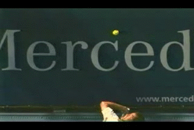
Extension, pronation, internal rotation, and wrist flexion—the four actions that take the racket to the ball.
I said in the first article that you want a coordinated, fluent effort. That you want the hips to rotate. Then you want the shoulders to rotate. That you want a leg drive.
And you want the arm to externally rotate driving the racket down. Next you want the arm to move up towards the ball.
So let’s so how that happens. There are four actions that are important to understand very, very well.
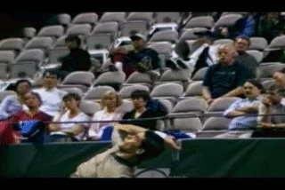
Extending the elbow provides a high impact position in the power serve.
Firstly there is elbow extension, followed by forearm pronation. Then there is internal rotation and finally wrist flexion. And these are the four actions that primarily work to drive the racquet forward and to position the racquet for impact.
Extension
In the power serve this mostly is used to provide a high impact position. In other serve types it may play a role in speed development also.
Pronation
Let's talk about pronation to start with, so we are very clear. Pronation is movement of the forearm. Pronation plays the role of positioning the racquet for impact.
If you want to understand pronation, grab hold of your elbow and then just rotate your forearm backwards and forwards. When your forearm rotates back that’s supination. And when it rotates forward that’s pronation.
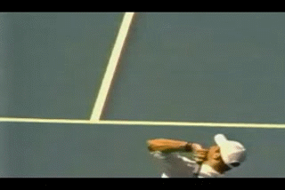
Pronation is the movement of the forearm that positions the angle of the racket for impact.
Players pronate at different levels, because they use different types of serves. Some will rotate the forearm so that the racket face is flat with the ball at contact on the power serve. Some will rotate it less and have the racket still on an angle to the ball.
That’s the idea of a slice serve. You don't actually pronate as much as for the flat serve so that your racquet is square. You keep the racquet at a slight angle.
You can train the pronation relatively easily. Just close your eyes and say, “flat,” “slice,” “flat,” “kicker.” It’s a very different pronation angle. Basically, much of your variation in the serve will come from variations in the amount of pronation.
Pronation will allow you to hit “bite” on the slice. There is no question about that. But it's not a big velocity or speed developer with reference to the first serve.
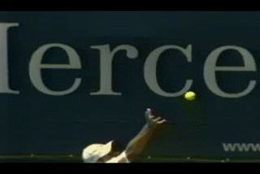
Pronation helps you hit bite on the slice, but is actually not a big speed developer.
Now, the big speed developer, the thing that actually creates the most speed, is internal rotation of the upper arm. About 40 percent of the speed of the racquet at impact comes from this internal rotation.
It's very difficult to see with the naked eye, I have to say. You can see it more in the follow through. As the good players hit up, they internally rotate, and you see the racket face turning over and going out to their right for a right handed player.
It really is almost impossible to see with the eye. But I'll tell you some things in a minute that will enable you to get people to do it, without actually telling them anything at all.
And the last movement is: wrist flexion, which involves forward movement of the hand. You do have some wrist movement in the serve.
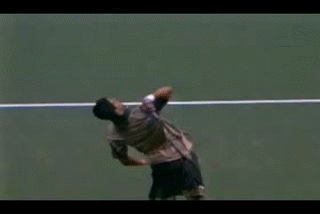
You can see internal rotation in the followthrough with the racket turning over and going out to the right.
So the service action, so far is: the leg drive up, the trunk rotation meaning hips and shoulders, and then the upper arm comes in: extension at the elbow, pronation, internal rotation, and wrist flexion.
So if you are a teaching pro reading this article, do you need to tell your students any of this? Please don't. You'll create absolute havoc. This is information that you store in your head that enables you to know how to teach people, that enables you how to notice what is happening and to look for errors.
Here's my tip on looking for internal rotation. The key to understanding the internal rotation is: where is the ball?
When I was taught to play tennis, I was taught to hit the ball off the right shoulder, so, in other words, all the movement and the throw of the ball toss was off your right shoulder, out to the right. Sorry. Things have changed.
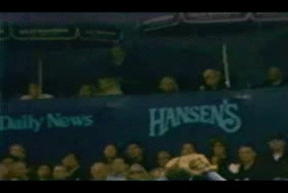
The forward movement of the hand, or wrist flexion is the fourth factor taking the racket up to the ball.
Now, you're actually hitting the ball off a central line. The ball should be, I think for young kids, in line with the front foot. You could say in line with the initial position of the head.
With good players--meaning people that are on the professional circuit--studies show that the first serve is hit to the left of the front foot.
Now, you may want, with kids, to be careful with this. You may say I really don't want to get kids so their back is in hyperextension too early in their development. So my advice to you would be, move it a little to the right. I don't mind at all if you actually teach, hit it off your right shoulder, as long as you then move it back into where you want it.
That's good teaching, and they're decisions that you have to make. Remember, if you hit the ball further to the right (right handed player) then your trunk will use more twist rotation in the early stages of service development.
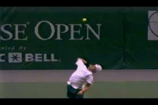
40% of the speed of the racket comes from internal rotation of the arm.
What I'm telling you is that when the serve is fully developed, you need it to be to the left of the front foot. If you put the ball there, internal rotation and shoulder over shoulder rotation will happen almost naturally.
Toss Height
What about the height of the toss? I always used to teach that you hit the ball at just above your maximum height, so I would say put your racquet up as far as you can and throw the ball just above that height.
I've probably changed my view now a little bit. Howard Brody, the physicist, has convinced me that you get better forward rotation if the ball is coming down. So the answer is just a little higher than your outstretched racquet, so the ball is coming down when you impact it. It allows for more forward rotation.
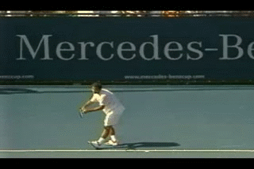
Top players hit with the ball to the left of the front foot starting position, naturally generating internal arm rotation.
When I was taught to play tennis, I was always told that you've got to be “extended” on the serve. You've got to be fully extended upwards. That's the whole idea of the game. Be as tall as you can be.
I can tell you now, sorry, that's not quite the truth. Your legs and trunk should be upright. Get them tall. That's what you want. Height, as Howard Brody has also said, is the key to getting the serve in, no question.
But is the racquet a natural extension of the forearm? Sorry. It's not. You do not hit with your arm and your racket straight up and down.
The racquet angle to the forearm is what allows me to use internal rotation to help develop power in the serve.
All you do is just tilt the racquet to the side. Get behind the good players and watch them. Because, if the racquet isn't a full extension of my arm, then as you internally rotate, it drives the racquet forward.
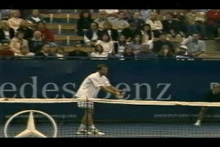
Allowing the toss to drop will actually help create forward rotation or topspin.
How do you accomplish this? Most of the time, it's just a question of hitting the ball in line with the left foot, moving the toss there, and you'll do it naturally.
If you like angles, here is another one. The angle between my arm and my trunk, should be about a hundred degrees. The range we saw in our filming was about 90 to 110.
If you see that angle, two things happen. There are two benefits for the price of one. You get maximum performance because you can rotate your upper arm and in fact your whole arm better. Secondly, you reduce the loading on the shoulder and the elbow.
It is the same as baseball. Baseball pitchers do exactly the same thing. The angle is about 90 to 110 because that's where you get maximum performance, minimum injury risk.
If you watch good players, you can see that that's the way they serve. Watch Roddick. Watch any of the big servers.
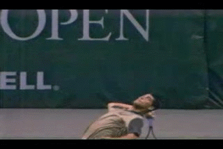
The angle between the racket and the forearm allows you to use external rotation.
At the Olympics, we filmed some of the great servers in three dimensions with two cameras, and that is exactly what they do. It's not my perception. This is what good people do.
So now let’s look at one last part. Let’s talk about heaviness. The heaviness of a serve.
Way back in the '80s, when I did my early research on tennis, we showed that there is no such thing in tennis as a flat serve--no such thing.
Most people can't hit a flat serve, You can't get the blasted thing in the court. You need some forward rotation of the ball.
Here’s another benefit of leg drive. It enables you to use an up and out hitting action, and that's what creates forward rotation on the ball.
What you want is for your racquet to be moving up to impact. So you are hitting up to the ball. As the ball comes down, and you hit up, it puts forward rotation on the ball, which allows the ball to be drawn it into the court.
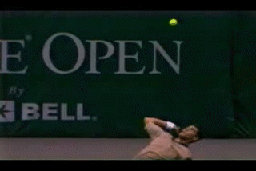
You are hitting up while the ball is coming down—there is no such thing as a “flat” serve.
If the ball's out to the right, it's very tough to hit up and out. But if the ball's in front of you, it's far easier. You can get up and over it. The back shoulder is really driving up to get up and over the ball.
So let’s look at the final part: the follow through. Now, in the follow through, let's check that we've got internal rotation. Let's check that we've got pronation.
I want you to look at where the arm goes in the follow-through. That's the best cue to whether you've got internal rotation and pronation, looking at what happens in the follow through.
Don't watch where the ball goes. Don't watch anything but the arm and the follow through. You can see that if pronation really happens, if the internal rotation really happens, you'll see the arm moves to the right with the racket turning over.
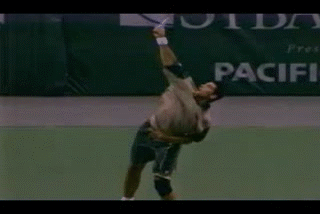
The followthrough is the best cue for understanding if your have internal rotation and pronation.
Now the whole idea of the follow through is to slow the movement down so that you don't put great pressure on the back of the shoulder.
We've hit the ball at high speed. Now, we need to slow the racket down. So that's the key, and that's the way to check it.
Summary
So let me finish up. Let's recapitulate on what I have said in my Australian language, so I hope that you've understood.
Firstly, check the legs, the position of the feet. Check where they are. Then you know how you're going to modify the service action you've got. Look at the leg drive. There are no ifs or buts. You need a leg drive. If you haven't got leg drive, you need it because it decreases loading. You really do need to do that.
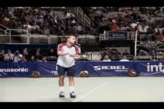
The “Big Deal” means using all the segments to generate power.
Remember, you need to rotate the hips and the trunk backwards. Remember, you need to rotate the hips and the trunk forwards. Then need to rotate the trunk forward, but more shoulder over shoulder. Remember, you have to hit up and out to the ball and have that sequence of motion.
If you find players that leave one bit out, then they are removing a segment from the movement, so they can't actually hit with as much speed.
Look at Philippoussis, Henman, Roddick. Any of the people with big deals, and you'll see that this is exactly what they do. Does that mean that young kids should be exactly the same? Absolutely not. But these are the goals you should build toward.
Bruce Elliott is a leading figure in the history of quantitative bio mechanical research. He has published over 130 articles, including many of the earliest and most important quantitative studies in tennis. He was a major contributor to World-Class Tennis Technique, and to the recent ITF book Biomechanics of Advanced Tennis. As a player and coach, his focus is on integrating research into coaching and teaching. A professor in biomechanics at the University of Western Australia , he is a keynote speaker at major teaching conferences throughout the world.